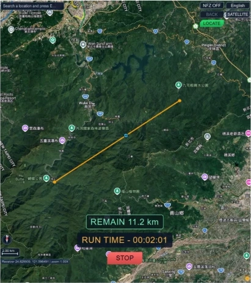
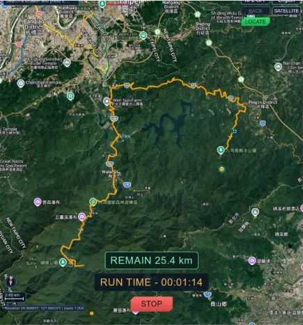

運算鎖在硬體裡
- ✕專用儀器，價格高昂
- ✕訊號運算封在硬體裡
- ✕想改一個條件往往很難
GEOTRUST · 系統特色
傳統 GNSS 測試靠昂貴、以硬體為主的專用儀器；GeoTrust 把關鍵都放到軟體上。
跟著一次測試，看我們在五個地方怎麼選。
01 · 軟體
第一個問題：訊號由誰決定？答案決定了整套系統好不好改。

三個部分
執行 GUI 介面
負責所有訊號運算
你的操作都在這裡
接收電腦算好的訊號
轉成真實的無線電訊號
本身不做訊號運算
接在 SDR 之後
把訊號送出去
決定訊號往哪個方向去
訊號怎麼算、怎麼變都在軟體裡，硬體只負責送出。
既然訊號全由軟體決定，GPS 和北斗能不能用同一台設備一起送？
02 · 融合
GPS 和北斗就像兩個不同的電台。傳統做法要兩套設備，GeoTrust 只用一台。
GPS 和北斗用的頻率不一樣。各送各的，就要兩組硬體，還得讓兩邊的時間對齊。
GeoTrust 先用軟體分別算好兩個系統，再把它們擺到同一段頻率的左右兩邊，合成一路訊號。
一台 SDR、一個通道，就能同時送出 GPS 與北斗，接收機可以一次收到兩個系統。
CPU算物理
衛星在哪、距離多遠
1次／每毫秒
每個通道的參數
GPU算取樣點
訊號的每一個取樣點
20,800次／每毫秒・每通道
來得及
即時發射，就是邊算邊送，算的速度要跟得上播放。入門筆電加上 GPU，1 毫秒內就能算完 112 個通道。
1 毫秒內，算得完幾個通道？
| 入門筆電i5-10300H + GTX 1650 Ti | |
|---|---|
| 高階筆電i9-9880H + RTX 2070 | |
| 高階桌機i7-14700F + RTX 4070 | |
| 次世代桌機R7-9700X + RTX 5070 Ti |
取樣率 20.8 MHz，各跑 1000 次，P99 延遲都在 1 毫秒內（團隊實測）想看頻率與公式？技術細節 →
訊號的事，電腦都算好了。接下來換你：要怎麼告訴它，你想測什麼？
03 · 介面
過去要打指令、手動下載、計算、儲存、對時才能發射，每換一次情境就重跑一輪；GeoTrust 把整個流程收進一個介面，自動完成。

命令列操作
門檻高，只有熟手用得動。

都在一個畫面上
操作難度大幅下降。
有了介面，連最麻煩的動態路徑都能簡化。
04 · 動態
介面有了，下一步是提高測試成功率：路線越貼近真實移動，接收機越能穩定跟上。
動態測試，靠的是 NMEA 軌跡
NMEA 是導航設備通用的文字格式，一行記下一個時間點的位置。把每一刻接起來就是一條軌跡，訊號照著它計算。
$GPGGA,100000.00,2458.2000,N,12125.1400,E,1,08,1.0,120.0,M,0.0,M,,*5E
一般要一步一步算出來；GeoTrust 只要在地圖上點一點。
查地圖，把沿途的座標一筆一筆記下來。
lat lon
24.9700 121.4190
24.9731 121.4262
24.9768 121.4335
24.9802 121.4411
…依速度內插出連續軌跡，速度與轉彎都要自己顧好。
time lat lon m/s
10:00:00 24.97000 121.41900 0.0
10:00:01 24.97002 121.41903 3.1
10:00:02 24.97005 121.41908 6.2
10:00:03 24.97009 121.41914 7.0
…換算格式、算校驗碼，存成檔案後再從命令列載入。
$GPGGA,100000.00,2458.2000,N,12125.1400,E,1,08,1.0,120.0,M,0.0,M,,*5E
$GPGGA,100001.00,2458.2012,N,12125.1418,E,1,08,1.0,120.0,M,0.0,M,,*55
$GPGGA,100002.00,2458.2030,N,12125.1448,E,1,08,1.0,120.0,M,0.0,M,,*53
$GPGGA,100003.00,2458.2054,N,12125.1484,E,1,08,1.0,120.0,M,0.0,M,,*50
…點選起點與終點，選直線或沿實際道路，其餘由系統完成。
兩邊的結果相同：一條 NMEA 軌跡、一段動態訊號。差別只在操作。

路徑 1
點到點，走最短距離。

路徑 2
沿著實際道路走，貼近真實移動。
路線和訊號都準備好了。最後一段路是實體的：訊號要靠天線送出去。
05 · 天線
天線是整套系統裡少數要自己設計的硬體。做法沒有變：先在軟體裡模擬，調好了再做實體。
拖曳旋轉・依 HFSS 圖重建的示意

步驟 1
在模擬裡建好幾何。

步驟 2
能量集中往一個方向，最大實現增益 10.02 dBi。
軟體決定送什麼
天線決定往哪送
天線的外形與方向，都先在電腦上驗證。
這些選擇的共同方向，是把原本昂貴、封閉、難操作的測試，變成一台電腦就能完成的工具。